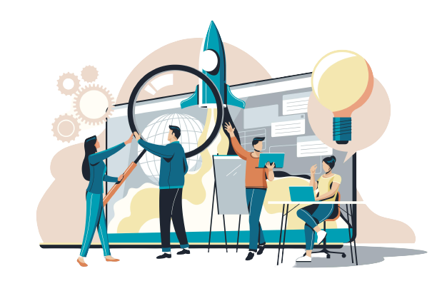

A transformação digital se tornou necessária para a maioria das empresas, isso porque os clientes exigem experiências cada vez mais digitais, logo, as organizações precisam se adaptar rapidamente para oferecer soluções cada vez mais inclusivas e abrangentes.
Cenário Favorável

Segundo pesquisas, o Brasil é um dos países onde a população passa mais tempo na internet. Isso significa uma super oportunidade de expansão para o seu negócio.

A pandemia acelerou ainda mais o processo de transformação digital, levando à busca de processos mais eficientes e mudança completa do modelo de negócio.
Assim as empresas mais familiarizadas com soluções digitais conseguiram capacitar seus colaboradores e se recuperar mais rapidamente